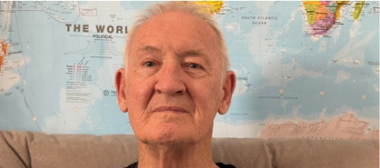
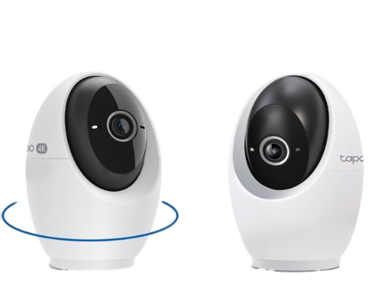
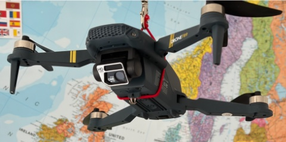
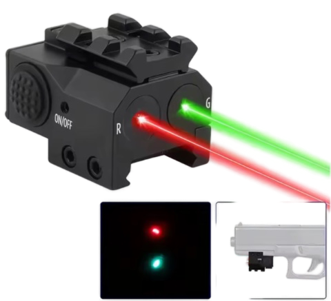
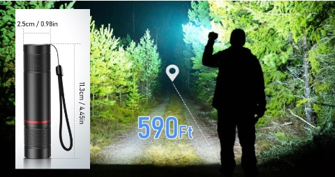
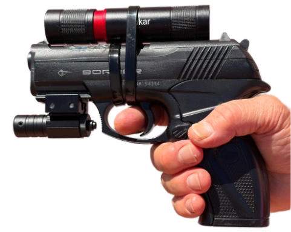

Spanish Police System

Introduction to Irorion SL
Irorion SL is a Spanish company that has developed a new police system that uses AI and machine learning algorithms to help improve the accuracy and efficiency of the system. The system is designed to be modular, allowing for easy upgrades and maintenance. It can be used to enhance the safety and security of police officers and the public, and can gather and analyze data to help inform decision-making and improve policing strategies.
Background
There are 3 major advantages of the system. It offers the ability to:1. Fire from a concealed position
2. Share information securly
3. Record tamper-proof evidence.
The system is designed to be modular, allowing for easy upgrades and maintenance. It can use AI and machine learning algorithms to help improve the accuracy and efficiency of the system. It can be used to enhance the safety and security of police officers and the public, and can gather and analyze data to help inform decision-making and improve policing strategies.
The Systems
The proposed system consists of 5 pieces
1. Computer system
2. Software package
3. Head Up Display
4. Ground/Drone Camera
5. Gun with LaserPointer/Flashlight
Computer System
The computer is simply a mobile phone. We have chosen the iPhone as it provides a high level of security and functionality.
The Software Package
The software package is the core of the system, providing the interface for officers to interact with the various components and access the data they need. All features will be voice controlled, allowing officersto keep their hands free and focus on their surroundings. The software will be designed to be user-friendly and intuitive, with a simple and straightforward interface that allows officers to quickly access the information they need. It will also be designed to be secure, with robust encryption and authentication measures to protect the data and ensure that only authorized users can access it.
The Head Up display
The head up display is a wearable device that provides officers with real-time information and alerts. It can display information such as the location of suspects, the status of the officer's equipment, and other relevant data.
The Ground Camera

The 4K ground camera is a stationary device that can be deployed in various locations to provide surveillance and gather evidence. It can be equipped with features such as night vision and motion detection to enhance its capabilities. Itbe mounter on a land drone to provide mobile surveillance and gather evidence in a variety of locations. It can be equipped with features such as night vision and motion detection to enhance its capabilities.
The Drone Camera

The drone camera is a mobile device that can be deployed in various locations to provide aerial surveillance and gather evidence. It can be equipped with features such as night vision and motion detection to enhance its capabilities.
The Laser Pointer

The laser pointer is attached to the gun to provide officers with enhanced accuracy and precision when firing from a concealed position. It can use laser technology to help officers aim and hit their targets more effectively.
The Flashlight

The flashlight can be attached to the gun to provide officers with enhanced visibility in low-light conditions. It can use powerful LED technology to illuminate the area and help officers see their targets more clearly. However, it can also be used as a standalone device to provide officers with enhanced visibility in a variety of situations, such as when searching for suspects or navigating through dark areas.
The Gun Sub-Assembly

The gun sub-assembly is a combination of the laser spotter and flashlight, providing officers with enhanced accuracy and visibility when firing from a concealed position. It can be easily attached to the gun and can be used in a variety of situations to help officers effectively engage their targets.
The Entire System

Bla Bla k
Funding
Venture Capital Funding will be required to get the busness started. VC's have 5 requirements when assessing wether or not to fund a new business. They want to see:
1. An insanley great idea
I sold this idea to the US army. They were so impressed that they spent $M40 with my company and allowed me
to grow from $M6 to $M40 in 2 years.
2. A protectable business.
If the police allow me to build an LLM of their confidential criminal database, I can use that to create a
unique product that no one else can copy. This gives me a strong competitive advantage and makes my business
more attractive to VCs.
3. A committed Lead Customer.
If the police agree to become my lead customer by placing and order for say, 1000 units, at an ageed price,
I can guerentee a 25% discount for the life of the business. No need to pay until delivery. Cancell at any
time.
4. A killer business plan
The business plan can be written relatively quickly by AI agents. I believe I can do this in a day or two.
5. A managment team that's "done it before"
If you have all 5, you get to keep (up to) half the business. If you have 4, you get to keep maybe 5%. If you have three, don't bother to call; they'll just hang up.
I believe we have all 5 bases covered. I have already agreed to give a few other founder members a few percent of the shares, and I believe we can attract the remainder of the talent need for an additional small fraction of the stock. Irorion is in a good position to attract the funding it needs to getstarted and grow into a successful business.
Lets do it!
if you are interested in learning more about th system, or in persuing this opportunity further, please contact me at:
Name: Hugh Duffy
Email: hughdro@icloud.com
Phone: +34 684 256 571